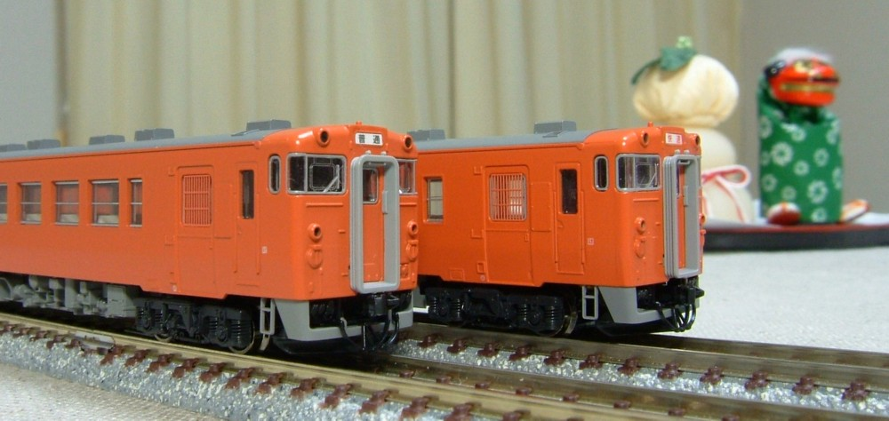
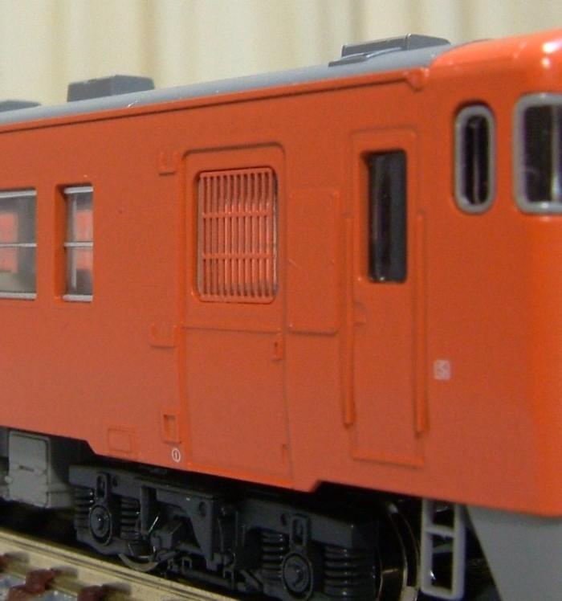
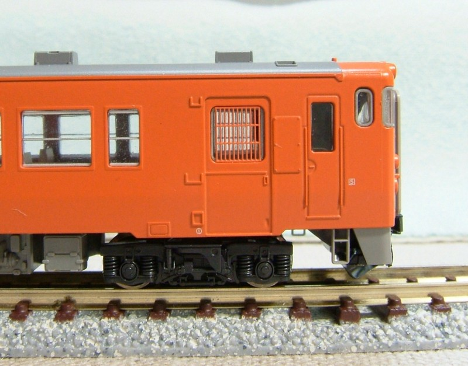

キハ40系
キハ40系です。背景がなぜか正月です(笑)。
キハ48が2両と、キハ40が1両です。キハ40とキハ48のうちの1両は、15年前に買った物です。


kitcheN
の タブレット保護柵を取り付けました。
これで急行・快速運用も可能です。
製品の窓ガラスはタブレット保護柵取り付け用の凹みが表現されていません。 運転席側の扉の窓と、反対側の扉の窓が全く同じで、165系や457系みたいです。
そのまま保護柵を取り付けると保護柵が飛び出してしまうため、 わざわざ窓ガラスを切り離して扉の部分だけ0.3mmへこませて窓ガラスを 取り付けなおしました。
そんなわけで、見た目以上に手間が掛かってます。

キハ40系用の保護柵はTAVASA と kitcheN から発売されていますが、 kitcheNのタブレット保護柵は抜きが細く、良くできています。
向こう側の見える感じが良いです。
台車をDT46に交換していて500番台風です(ナンバーは製品のまま…)。